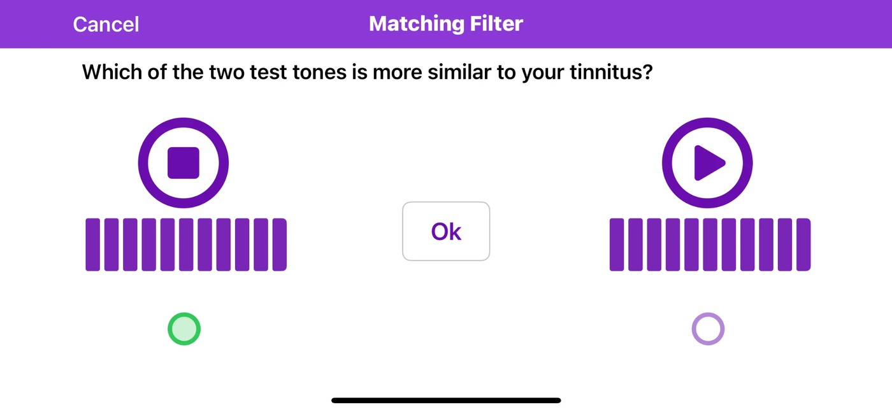
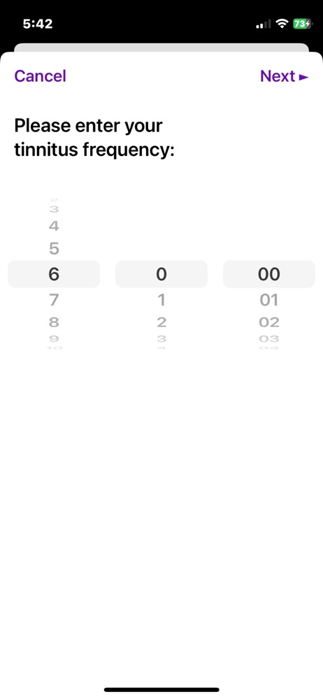
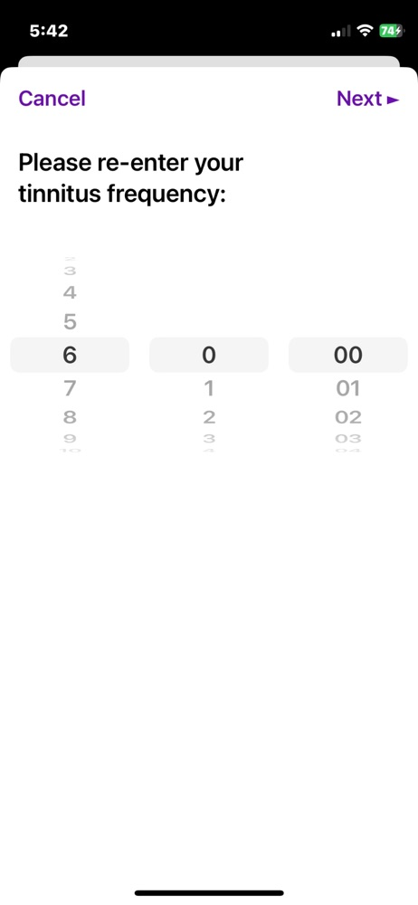
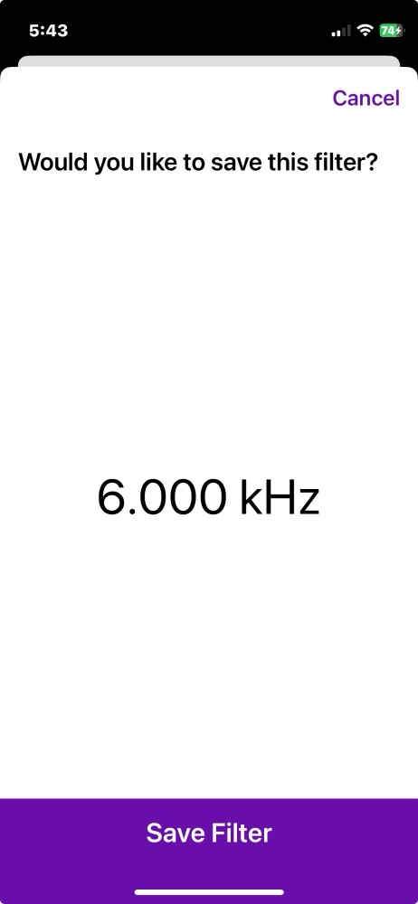
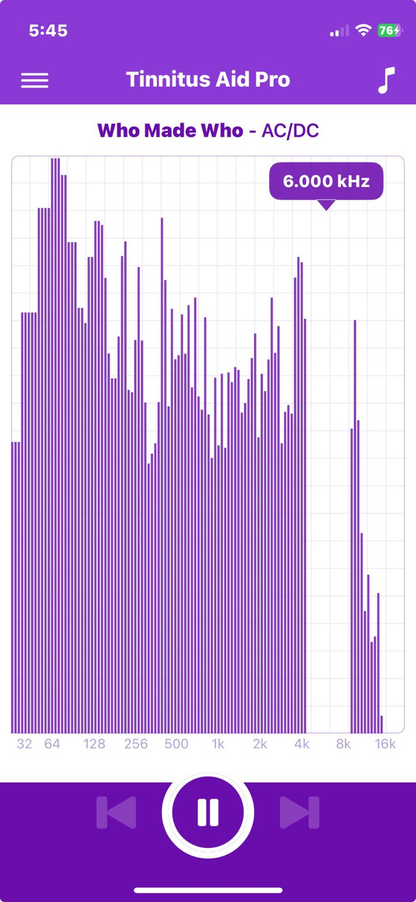
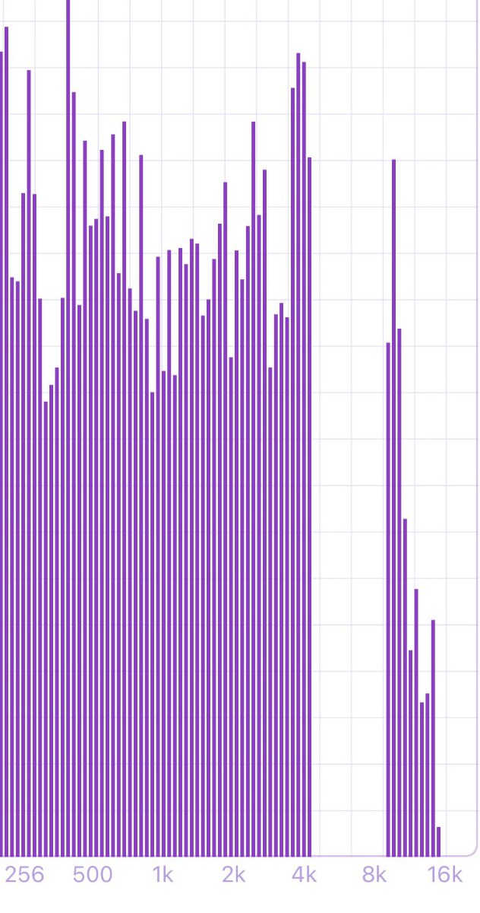
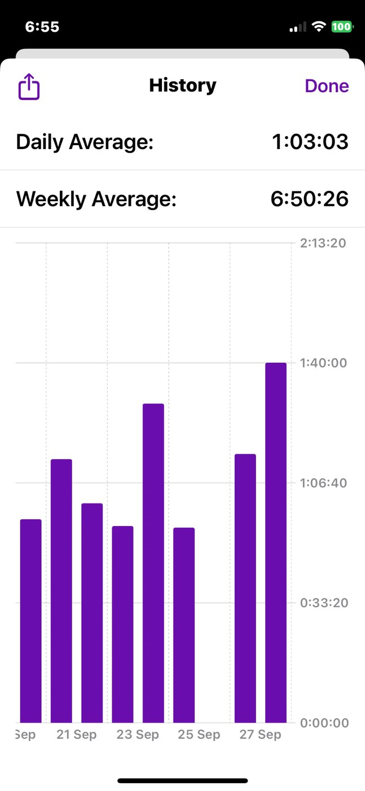

Tailor Made Notched Music · iPhone
Tinnitus Aid Pro finds the frequency of the tone you hear, then removes a one-octave band around it from whatever you play and lifts the bands either side. You listen to your own music, an hour or two a day.
How it works
A guided test plays pairs of tones and asks which one is closer to the sound you hear. It runs over several sessions on different days, because one sitting is not enough to be sure.
The test produces a filter at your frequency. If a hearing specialist has already measured it for you, enter that figure instead.
Pick anything from your library. The notch is applied live as it plays, so nothing has to be prepared or downloaded first.
Your tone
One you can perform yourself, over several sittings. The other assumes an audiologist has already measured it.
Choose which ear the sound is in, set the tones to roughly the loudness you hear, then compare them two at a time: play Tone 1, play Tone 2, pick the closer one. A thumb wheel beside each tone trims its loudness while you decide.

If you already have a frequency from a hearing specialist, you can set it directly. The app asks for it twice and will not accept the two entries unless they agree, so a slip of the wheel cannot become your filter.

1 Enter it

2 Enter it again

3 Save it
Listening
The spectrum is live while the music plays, with the notch drawn where your filter sits. Nothing about the processing is hidden behind a switch.
Your track plays from your own library with the filter applied in real time. The frequency grid runs underneath, the notch is marked at your frequency, and the level of what is actually reaching you is drawn as it happens.

The quarter-octave shoulders on each side of the notch are raised by 15 dB. That is the part that does the work: the neighbouring bands are driven harder precisely because they are the ones that quiet the region you hear a tone in.

The app keeps a record of listening time: a daily and weekly average, and a bar for every day. You can share the record out of the app, which is the simplest way to show somebody what you have been doing.
